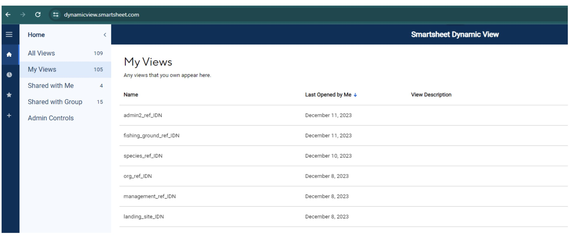

Reference Files
Actualización de Archivos de Referencia
Todos los archivos de referencia se actualizan en la vista dinámica de Smartsheet. Los archivos de referencia sirven como entradas para las listas desplegables en los formularios de KoBoToolbox y contienen datos que se agregan a los conjuntos de datos maestros a través de uniones. Contienen información completa sobre los niveles administrativos de las comunidades pesqueras (país, provincia, distrito, aldea), sitios de desembarque, caladeros, pescadores, compradores, recolectores de datos, especies, áreas de manejo, tipos de artes y organizaciones asociadas. Los pasos a continuación describen cómo actualizar los archivos de referencia con nueva información.
Paso 1: Cree una cuenta gratuita de smartsheet.
Se puede crear una cuenta gratuita en https://www.smartsheet.com/
Seleccione “Pruebe smartsheet de forma gratuita”.
Paso 2: Proporcione a Barefoot Ocean la dirección de correo electrónico que utilizó para crear su cuenta de smartsheet.
Barefoot Ocean luego compartirá los archivos de referencia asociados con su organización.
Para ver sus archivos de referencia, deberá iniciar sesión en la vista dinámica de smartsheet con sus credenciales de smartsheet: https://dynamicview.smartsheet.com/login
Una vez que inicie sesión en la Vista dinámica (no en la aplicación de smartsheet), verá una lista de archivos de referencia compartidos con su cuenta (Figura 1).
Figura 1: Lista de archivos de referencia en la vista dinámica

Paso 3: Haga clic en un archivo de referencia para realizar actualizaciones
Una vez abierto, puede hacer clic en cada fila para realizar ediciones en los datos existentes, o hacer clic en el botón “Nuevo” en la esquina superior derecha para agregar nuevos datos (Figura 2).
Aparecerá un panel de detalles en el lado derecho donde ingresará la información necesaria (Figura 3; Tabla 1). Seleccione “guardar” en la parte inferior derecha del panel de detalles cuando haya terminado de actualizar. No es necesario que notifique a Barefoot Ocean cuando realice cambios o adiciones a las hojas de referencia. Se fusionarán automáticamente con los archivos de referencia maestros y se incorporarán a Kobo.
Para dejar un comentario o hacer cualquier pregunta al equipo de Barefoot, seleccione la pestaña “Comentarios” en el panel de detalles. Todas las personas con las que se comparte el archivo de referencia, incluido el equipo de Barefoot Ocean, recibirán una notificación cuando se haga un comentario, por lo que no es necesario etiquetar a ninguna persona en particular.
Figura 2: Vista de ejemplo de admin2_ref en Vista dinámica

Figura 3: Vista de ejemplo del panel de detalles admin2_ref en la Vista dinámica

Paso 4: Responda a las solicitudes de actualización cuando falten datos o sean incorrectos, o para responder a un comentario.
Si hay información incompleta o incorrecta que es esencial para completar los menús desplegables de Kobo o para unirse, o si se hace un comentario en la hoja, se enviará una solicitud de actualización a todos los usuarios apropiados, pidiéndoles que actualicen la información o respondan a un comentario (Figura 4). De forma predeterminada, todas las personas con acceso a sus archivos de referencia recibirán la solicitud de actualización.
Aparecerá una vista previa de los datos que deben actualizarse o responderse debajo del mensaje de correo electrónico, pero no podrá actualizar ningún dato directamente en el correo electrónico
En la parte inferior del correo electrónico, hay un enlace para “Ir a la hoja”; sin embargo, la hoja subyacente tiene acceso restringido. Revise sus datos o responda al comentario a través de una solicitud abierta.
Haga clic en el botón” Abrir solicitud ” en el mensaje de correo electrónico.
Se abrirá una nueva ventana del navegador de Internet con una configuración similar a un formulario para cada entrada (Figura 5)
Revise los campos BFO y rellene los campos editables.
Haga clic en siguiente en la parte inferior de la pantalla para desplazarse por cada entrada que deba actualizarse.
Para omitir una entrada (por ejemplo, si aún no está seguro de qué respuesta elegir), haga clic en “Siguiente” sin hacer una selección en las columnas editables. Aparecerá la siguiente entrada que necesita actualizarse.
Si necesita salir de la página o detenerse antes de que se hayan actualizado todas las entradas, sus opciones deben guardarse la próxima vez que vuelva a abrir la solicitud. Al abrir para continuar, simplemente haga clic en “Siguiente” hasta que encuentre una entrada que deba actualizarse.
Cuando llegue a la última entrada, haga clic en “Listo”. Aparecerá un mensaje emergente que le preguntará si está listo para enviar su actualización.’:
Haga clic en “Volver” si necesita revisar
Haga clic en” Enviar actualización ” para enviar sus actualizaciones.
Sus actualizaciones se agregan automáticamente al archivo de referencia y puede verlas en la Vista dinámica
Si en algún momento encuentra algún error, tiene preguntas o necesita asistencia para actualizar los archivos de referencia, comuníquese con nosotros al barefootinfo@barefootocean.org.
Figura 4: Ejemplo de correo electrónico de “Solicitud de actualización” cuando es necesario corregir la información o responder a los comentarios.

Tabla 1: Los campos primarios en cada uno de los archivos de referencia. El tipo de campo “BFO” es administrado por Barefoot Ocean y no es editable. Para solicitar cambios en cualquiera de los campos “BFO”, deje un comentario. Solo se pueden editar los campos con el tipo de campo “editable”. El tipo de campo “auto” se rellena automáticamente.
| Nombre del campo | Descripción del campo | Tipo de campo |
|---|---|---|
| Todos los archivos de referencia | ||
| latest_comment | Esta columna almacena el último comentario que se realizó para esa fila. Para ver la discusión completa de los comentarios de esa fila, simplemente haga clic en cualquier lugar de la fila. Aparecerá el panel de detalles, como en la Figura 3. Haga clic en la pestaña” Comentarios ” para ver todos los comentarios de esa fila. | auto |
| modified_date | Fecha de la última edición | auto |
| modified_by | Usuario que realizó la última edición | auto |
| admin1_ref | ||
| country | Código de país ISO, que es un código de combinación de letras reconocido internacionalmente | BFO |
| name | El nombre del administrador1, el nivel administrativo más alto después del país (es decir, la provincia) sin espacios ni puntuación, solo subraya | BFO |
| label | Nombre de admin1, el nivel administrativo más alto después del país (es decir, provincia) con espacios y puntuación permitidos. No cambie la etiqueta a menos que sea absolutamente necesario, ya que las uniones se basan en esto. | editable |
| partner_flag | La bandera será roja si el valor” socio ” no existe en org_ref | BFO |
| partner | Nombre del socio sin espacios ni puntuación, solo guiones bajos. La lista desplegable está conectada a la columna “nombre” en org_ref. | editable |
| active | Seleccione ” Sí ” si los datos se están recopilando allí actualmente. Si ya no estás recopilando datos allí y deseas ocultarlos del menú desplegable de Kobo, selecciona ” No.” | editable |
| remove | Elija ” Sí ” si desea eliminar el administrador1. Admin1s solo debe eliminarse si el nombre es incorrecto o es un duplicado de un registro existente. Por favor, deje un comentario sobre el motivo de la eliminación. Si los datos ya no se recopilan allí, seleccione ” No “en la columna” activo”. | editable |
| admin2_ref | ||
| country | Código de país ISO, que es un código de combinación de letras reconocido internacionalmente | BFO |
| name | Nombre de admin2, el nivel administrativo más alto después de admin1 (es decir, distrito) sin espacios y sin puntuación, solo guiones bajos | BFO |
| label | Nombre de admin2, el nivel administrativo más alto después de admin1 (es decir, distrito) con espacios y puntuación permitidos. Por favor, no cambie la etiqueta a menos que sea absolutamente necesario, ya que las uniones se basan en esto. | editable |
| admin1_flag | La bandera será roja si el valor” admin1_ref_name ” no existe en admin1_ref | BFO |
| admin1_ref_name | Admin1 nombre sin espacios ni signos de puntuación, solo guiones bajos. La lista desplegable está conectada a la columna “nombre” en admin1_ref. | editable |
| active | Seleccione ” Sí ” si los datos se están recopilando allí actualmente. Si ya no estás recopilando datos allí y deseas ocultarlos del menú desplegable de Kobo, selecciona ” No.” | editable |
| remove | Elija ” Sí ” si desea eliminar el administrador. 2. Admin2s solo debe eliminarse si el nombre es incorrecto o es un duplicado de un registro existente. Por favor, deje un comentario sobre el motivo de la eliminación. Si los datos ya no se recopilan allí, seleccione ” No “en la columna” activo”. | editable |
| admin3_ref | ||
| country | Código de país ISO, que es un código de combinación de letras reconocido internacionalmente | BFO |
| name | Nombres Admin2 y admin3 combinados sin espacios ni signos de puntuación, solo guiones bajos.El administrador 3 es el nivel administrativo más alto después del administrador 2 (es decir, la aldea). | BFO |
| label | Nombre de admin3, el nivel administrativo más alto después de admin2 (es decir, aldea) con espacios y puntuación permitidos. Por favor, no cambie la etiqueta a menos que sea absolutamente necesario, ya que las uniones se basan en esto. | editable |
| admin1 | Admin1 nombre con espacios y puntuación permitidos. Esto se extrae de admin1_ref y se rellena automáticamente en función del admin2 elegido. | BFO |
| admin1_ref_name | Admin1 nombre sin espacios ni signos de puntuación, solo guiones bajos. Esto se extrae de admin1_ref y se rellena automáticamente en función del admin2 elegido | BFO |
| admin2_flag | La bandera será roja si el valor” admin2 ” no existe en admin2_ref. | BFO |
| admin2 | Nombre Admin2 con espacios y puntuación permitidos. La lista desplegable está conectada a la columna “etiqueta” en admin2_ref. | editable |
| admin2_ref_name | Nombre Admin2 sin espacios ni signos de puntuación, solo guiones bajos. Esto se extrae de admin2_ref y se rellena automáticamente en función del admin2 elegido. | BFO |
| active | Seleccione ” Sí ” si los datos se están recopilando allí actualmente. Si ya no estás recopilando datos allí y deseas ocultarlos del menú desplegable de Kobo, selecciona ” No.” | editable |
| remove | Elija ” Sí ” si desea eliminar el administrador. 3. Admin3s solo debe eliminarse si el nombre es incorrecto o es un duplicado de un registro existente. Por favor, deje un comentario sobre el motivo de la eliminación. Si los datos ya no se recopilan allí, seleccione ” No “en la columna” activo”. | editable |
| admin3_lat | Latitud de administración3 | editable |
| admin3_long | Longitud de admin3 | editable |
| m1-m4_flag | Se marcará el indicador si management_ID_1-4 no existe en management_ref. | BFO |
| management_ID_1-4 | Nombre del ID de gestión, con espacios y puntuación permitidos. Si hay 4 áreas de gestión dentro del admin3, simplemente seleccione la primera unidad de gestión en “management_ID_1”, la segunda unidad de gestión en “management_ID_2”, etc. La lista desplegable está conectada a la columna “management_ID” en management_ref. | editable |
| management_govern_1-4 | Sí / No campo que identifica si la aldea es responsable de la gestión del área. | editable |
| buyer_ref | ||
| country | Código de país ISO, que es un código de combinación de letras reconocido internacionalmente | BFO |
| name | Nombre del comprador sin espacios y sin puntuación, solo guiones bajos | BFO |
| label | Nombre del comprador con espacios y puntuación permitidos. Por favor, no cambie la etiqueta a menos que sea absolutamente necesario, ya que las uniones se basan en esto. | editable |
| buyer_gender | Género del comprador; M (masculino), F (femenino) o NB (no binario) | editable |
| buyer_id | Número único de identificación para identificar al comprador. Por favor, deje un comentario si dos compradores diferentes tienen la misma identificación. De forma predeterminada, dos compradores con el mismo nombre exacto, incluso si son de dos aldeas diferentes, recibirán la misma identificación a menos que se indique lo contrario. | BFO |
| admin1 | Administración1 nombre en el que compra el comprador, con espacios y puntuación permitidos. Esto se extrae de admin1_ref y se rellena automáticamente en función del admin3_ref_name elegido. | BFO |
| admin2 | Admin2 nombre donde compra el comprador, con espacios y puntuación permitidos. Esto se extrae de admin2_ref y se rellena automáticamente en función del admin3_ref_name elegido. | BFO |
| admin3 | Admin3 nombre donde compra el comprador, con espacios y puntuación permitidos. Esto se extrae de admin3_ref y se rellena automáticamente en función del admin3_ref_name elegido. | BFO |
| admin3_ref_name | Nombres Admin2 y admin3 combinados sin espacios ni signos de puntuación, solo guiones bajos.La lista desplegable está conectada a la columna “nombre” en admin3_ref. | editable |
| admin3_flag | La bandera será roja si el valor” admin3_ref_name ” no existe en admin3_ref. | BFO |
| active | Seleccione ” Sí ” si actualmente se están recopilando datos de esta persona. Si ya no se recopilan datos de esta persona y deseas ocultarlos del menú desplegable de Kobo, selecciona ” No.” | editable |
| remove | Elija ” Sí ” si desea eliminar al comprador. Los compradores solo deben eliminarse si el nombre es incorrecto o es un duplicado de un registro existente. Por favor, deje un comentario sobre el motivo de la eliminación. Si el comprador ya no está en el village o ya no compra, seleccione ” No “en la columna” activo”. | editable |
| fisher_ref | ||
| country | Código de país ISO, que es un código de combinación de letras reconocido internacionalmente | BFO |
| name | Nombre del pescador sin espacios y sin puntuación, solo guiones bajos | BFO |
| label | Nombre del pescador con espacios y puntuación permitidos. Por favor, no cambie la etiqueta a menos que sea absolutamente necesario, ya que las uniones se basan en esto. | editable |
| fisher_gender | Género del pescador; M (masculino), F (femenino) o NB (no binario) | editable |
| fisher_id | ID de número único para identificar al pescador. Por favor, deje un comentario si dos pescadores diferentes tienen la misma identificación. Por defecto, dos pescadores con el mismo nombre exacto, incluso si son de dos aldeas diferentes, recibirán la misma identificación a menos que se indique lo contrario. | BFO |
| admin1 | Administración1 nombre donde el pescador desembarca su captura, con espacios y puntuación permitidos. Esto se extrae de admin1_ref y se rellena automáticamente en función del admin3_ref_name elegido. | BFO |
| admin2 | Admin2 nombre donde el pescador desembarca su captura, con espacios y puntuación permitidos. Esto se extrae de admin2_ref y se rellena automáticamente en función del admin3_ref_name elegido. | BFO |
| admin3 | Admin3 nombre donde el pescador desembarca su captura, con espacios y puntuación permitidos. Esto se extrae de admin3_ref y se rellena automáticamente en función del admin3_ref_name elegido. | BFO |
| admin3_ref_name | Nombres Admin2 y admin3 combinados sin espacios ni signos de puntuación, solo guiones bajos.La lista desplegable está conectada a la columna “nombre” en admin3_ref. | editable |
| admin3_flag | La bandera será roja si el valor” admin3_ref_name ” no existe en admin3_ref. | BFO |
| active | Seleccione ” Sí ” si actualmente se están recopilando datos de esta persona. Si ya no se recopilan datos de esta persona y deseas ocultarlos del menú desplegable de Kobo, selecciona ” No.” | editable |
| remove | Elija ” Sí ” si desea eliminar el administrador. 3. Admin3s solo debe eliminarse si el nombre es incorrecto o es un duplicado de un registro existente. Por favor, deje un comentario sobre el motivo de la eliminación. Si el pescador ya no está en la aldea o ya no pesca, seleccione ” No “en la columna” activo”. | editable |
| data_collector_ref | ||
| country | Código de país ISO, que es un código de combinación de letras reconocido internacionalmente | BFO |
| name | Nombre del recopilador de datos sin espacios ni signos de puntuación, solo guiones bajos | BFO |
| label | Nombre del recopilador de datos con espacios y puntuación permitidos. | editable |
| gender | Género del recopilador de datos; M (masculino), F (femenino) o NB (no binario) | editable |
| admin3_flag | La bandera será roja si el valor” admin3_ref_name ” no existe en admin3_ref. | BFO |
| admin3_ref_name | Nombres Admin2 y admin3 combinados sin espacios ni signos de puntuación, solo guiones bajos.La lista desplegable está conectada a la columna “nombre” en admin3_ref. | editable |
| landings_mon | Seleccione ” Sí ” si desea que el recopilador de datos aparezca en el menú desplegable del formulario de monitoreo de Kobo landings. | editable |
| landings_prof | Selecciona ” Sí ” si quieres que el recopilador de datos aparezca en el menú desplegable del formulario de creación de perfiles de Kobo landings | editable |
| hhs | Selecciona ” Sí ” si quieres que el recopilador de datos aparezca en el menú desplegable del formulario de encuesta de hogares de Kobo | editable |
| comm_prof | Selecciona ” Sí ” si quieres que el recopilador de datos aparezca en el menú desplegable del formulario de creación de perfiles de la comunidad de Kobo | editable |
| remove | Elija ” Sí ” si desea eliminar el recopilador de datos. | editable |
| fishing_ground_ref | ||
| country | Código de país ISO, que es un código de combinación de letras reconocido internacionalmente | BFO |
| name | Nombre del caladero sin espacios y sin puntuación, solo subrayados | BFO |
| label | Nombre del caladero con espacios y puntuación permitidos. Por favor, no cambie la etiqueta a menos que sea absolutamente necesario, ya que las uniones se basan en esto. | editable |
| admin3_flag | La bandera será roja si el valor” admin3_ref_name ” no existe en admin3_ref. | BFO |
| admin3_ref_name | Nombres Admin2 y admin3 combinados sin espacios ni signos de puntuación, solo guiones bajos.La lista desplegable está conectada a la columna “nombre” en admin3_ref. | editable |
| partner_flag | La bandera será roja si el valor” socio ” no existe en org_ref | BFO |
| partner | Nombre del socio sin espacios ni puntuación, solo guiones bajos. La lista desplegable está conectada a la columna “nombre” en org_ref. | editable |
| latitude | Latitud del caladero | editable |
| longitude | Longitud del caladero | editable |
| active | Seleccione ” Sí ” si el caladero se está utilizando actualmente. Si quieres ocultarlo del menú desplegable de Kobo o ya no se está utilizando, selecciona ” No.” | editable |
| remove | Elija ” Sí ” si desea eliminar el caladero | editable |
| gear_ref | ||
| country | Código de país ISO, que es un código de combinación de letras reconocido internacionalmente | BFO |
| name | Nombre local del engranaje sin espacios y sin puntuación, solo guiones bajos | BFO |
| label | Nombre local del engranaje con espacios y puntuación permitidos. Por favor, no cambie la etiqueta a menos que sea absolutamente necesario, ya que las uniones se basan en esto. | editable |
| gear_global | Nombre en inglés del engranaje sin espacios y sin puntuación, solo guiones bajos. Esta es una lista desplegable predefinida. Elija el que mejor se adapte al equipo local o comente si no está seguro. | editable |
| gear_detail | Descripción del equipo | editable |
| species_group | Las especies agrupan los objetivos de los aparejos. Si un engranaje se dirige a varias especies, cree una nueva fila de datos para cada grupo de especies. La lista desplegable está conectada a la columna “species_group” en species_ref. | editable |
| species_flag | La bandera será roja si el” species_group ” elegido no existe en species_ref. | BFO |
| partner | Nombre del socio sin espacios ni puntuación, solo guiones bajos. La lista desplegable está conectada a la columna “nombre” en org_ref. | editable |
| partner_flag | La bandera será roja si el valor” socio ” no existe en org_ref | BFO |
| remove | Elija ” Sí ” si desea quitar el engranaje. Por favor, deje un comentario explicando por qué. | editable |
| landing_site_ref | ||
| country | Código de país ISO, que es un código de combinación de letras reconocido internacionalmente | BFO |
| name | Nombre del lugar de aterrizaje sin espacios ni signos de puntuación, solo guiones bajos | BFO |
| label | Nombre del lugar de aterrizaje con espacios y puntuación permitidos | editable |
| admin3_flag | La bandera será roja si el valor” admin3_ref_name ” no existe en admin3_ref. | BFO |
| admin3_ref_name | Nombres Admin2 y admin3 combinados sin espacios ni signos de puntuación, solo guiones bajos.La lista desplegable está conectada a la columna “nombre” en admin3_ref. | editable |
| remove | Elija ” Sí ” si desea eliminar el sitio de aterrizaje. | editable |
| management_ref | ||
| country | Código de país ISO, que es un código de combinación de letras reconocido internacionalmente | BFO |
| partner_ID | Nombre del socio sin espacios ni puntuación, solo guiones bajos. La lista desplegable está conectada a la columna “nombre” en org_ref. | editable |
| partner_flag | La bandera será roja si el valor” socio ” no existe en org_ref | BFO |
| management_id | Nombre único del área de gestión con espacios y puntuación permitidos. Por favor, no cambie el nombre a menos que sea absolutamente necesario, ya que las uniones se basan en esto. | editable |
| management_id_unique | Nombre único del área de gestión y fecha de cierre. Este debe ser el management_id sin espacios ni puntuación combinado con un número que identifique el cierre único con esa área. Por ejemplo, si un management_id llamado Boston tuviera dos fechas de cierre asociadas, tendríamos asignados dos campos management_id_unique. Uno podría ser Boston_1 y otro Boston_2 para identificar cierres dentro de un área de gestión. | editable |
| management_fishing_ground | La lista de caladeros asociados con el management_id y la fecha de veda. | editable |
| management_method | El tipo de método de gestión, incluidos cierres temporales, zonas de exclusión, etc. Esta es una lista predefinida. Por favor comente si no está seguro. | editable |
| target_species | Especies objetivo para el área manejada. Pueden ser grupos de especies o especies científicas. El campo está abierto. | editable |
| target_habitat | Hábitat objetivo para el área administrada | editable |
| management_area_ha | Tamaño del área administrada medido en hectáreas (ha) | editable |
| close_date | Fecha de cierre del área gestionada | editable |
| open_date | Fecha de apertura del área gestionada | editable |
| management_lat | Latitud del área de gestión | editable |
| management_long | Longitud del área de gestión | editable |
| remove | Elija ” Sí ” si desea eliminar el id de administración. | editable |
| org_ref | ||
| country | Código de país ISO, que es un código de combinación de letras reconocido internacionalmente | BFO |
| name | Nombre del socio / organización sin espacios y sin puntuación, solo guiones bajos | BFO |
| label | Nombre del socio / organización con espacios y puntuación permitidos. Por favor, no cambie la etiqueta a menos que sea absolutamente necesario, ya que las uniones se basan en esto. | editable |
| species_group | Los grupos de especies sobre los que el socio recopila datos. La lista desplegable está conectada a la columna “species_group” en species_ref. Seleccione todos los grupos si desean que aparezcan todas las especies en species_ref. | editable |
| active | Seleccione ” Sí ” si el socio está recopilando datos actualmente. Si quieres ocultarlo del menú desplegable de Kobo o ya no recopilan datos, selecciona ” No.” | editable |
| remove | Elija ” Sí ” si desea eliminar al socio / organización | editable |
| species_ref | ||
| country | Código de país ISO, que es un código de combinación de letras reconocido internacionalmente | BFO |
| partner | Nombre del socio sin espacios ni puntuación, solo guiones bajos. Los menús desplegables de especies son filtrados por el socio. Algunos países tienen múltiples socios que comparten una lista de especies. En ese caso, verá el código del país en lugar del socio, y se mostrará la lista completa de especies para cada socio en ese país, a menos que se especifiquen ciertos grupos de especies en la columna “species_group” en org_ref. | BFO |
| habitat | Tipo de hábitat asociado a la especie | BFO |
| name | Nombre local y nombre de la especie combinados con un guión bajo, sin otros signos de puntuación o espacios. | BFO |
| label | Nombre local con el nombre de la especie entre paréntesis | BFO |
| species_group | Especies categorizadas en grupos según su biología sin espacios ni signos de puntuación, solo guiones bajos. Este campo se utiliza para ayudar a filtrar ciertas opciones de respuesta en Kobo. | BFO |
| species_flag | La bandera será roja si el” species_group ” elegido no está referenciado en gear_ref. Eso significa que todos los engranajes enumerados en gear_ref aparecerán para este grupo de especies. Para mostrar solo los engranajes que se dirigen a este grupo de especies, agregue el grupo de especies a gear_ref. | BFO |
| local_name | Nombre de la especie local con espacios y puntuación permitidos | editable |
| admin2 | Nombre del administrador2 sin espacios ni signos de puntuación, solo guiones bajos. La lista desplegable está conectada a la columna “nombre” en admin2_ref. Este campo solo se mostrará para los socios que deseen que el menú desplegable de especies se filtre por el admin2 elegido. | editable |
| common_english | Nombre común de la especie en inglés con espacios y puntuación permitidos | BFO |
| scientific_family | Apellido de una especie con espacios y puntuación permitidos | BFO |
| scientific_species | Nombre científico de la especie con espacios y puntuación permitidos. Si se desconoce la especie, también se puede ingresar el género o la familia. Si solo se conoce el género, escriba el nombre del género seguido de “sp” (en lugar de” spp ” o sp.”). Si solo se conoce la familia, escriba el nombre de la familia (es decir, Lutjanidae). | editable |
| remove | Elija ” Sí ” si desea eliminar la especie. | editable |
| translations_ref | ||
| english | La traducción al inglés de “agregar nuevo”,” no sé”,” no está a la venta”, etc. | BFO |
| country language | La traducción del idioma del país para “agregar nuevo”,” no sé”,” no está a la venta”, etc. | editable |
| ref_sheet | La hoja de referencia con la que se fusionará la traducción aparecerá en el menú desplegable correspondiente en Kobo | BFO |
| min_max_ref | ||
| country | Código de país ISO, que es un código de combinación de letras reconocido internacionalmente | BFO |
| partner | Nombre del socio sin espacios ni puntuación, solo guiones bajos. | BFO |
| min | El precio mínimo basado en species_group | editable |
| max | El precio máximo basado en species_group | editable |
| species_group | El grupo de especies al que se aplica la advertencia mínima/máxima. Para agregar un nuevo grupo, comente y avise a BFO. | BFO |
| habitat | El hábitat al que se aplica la advertencia min/max. | BFO |
| category | Precio por kg o precio por individuo (las advertencias de peso y longitud de las especies se implementan en el back-end a través de datos de la literatura) | editable |
Preguntas Frecuentes:
- Una vez que agrego un nuevo administrador1, ¿cuánto tiempo tarda en aparecer en el menú desplegable de administrador2?
- Pasarán aproximadamente 15 minutos antes de que las nuevas entradas estén disponibles en los menús desplegables dinámicos. Esto se aplica al menú desplegable admin2 en admin3_ref, al menú desplegable species_group en gear_ref, al menú desplegable admin3 en buyer_ref, fisher_ref, data_collector, etc. Consulte la Figura 5 para ver la lista completa de menús desplegables dinámicos y su flujo de trabajo a través de los archivos de referencia.
- Una vez que agrego o actualizo un archivo de referencia, ¿cuánto tiempo tarda en aparecer las actualizaciones en las encuestas de Kobo?
- Debería ver un formulario de Kobo actualizado en aproximadamente 12-24 horas.
- ¿Cómo se deben registrar los nombres de compradores, pescadores y recolectores de datos?
- Idealmente, los nombres deben ser lo más exclusivos posible para el individuo e incluir su nombre, apellido y apodo. Si una persona no desea compartir su apellido completo, también puede usar la primera inicial o la primera letra de su apellido.
Conexión desplegable dinámica entre archivos de referencia.